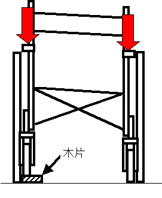
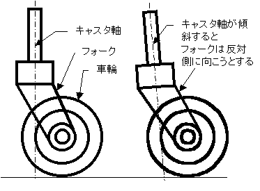
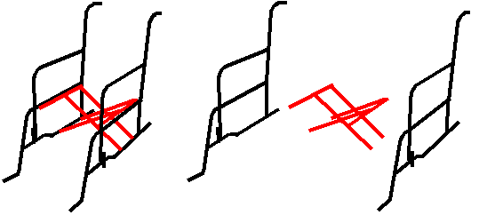
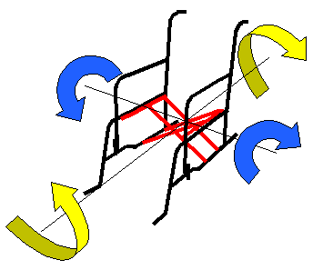
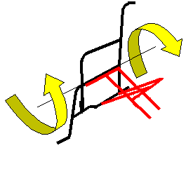
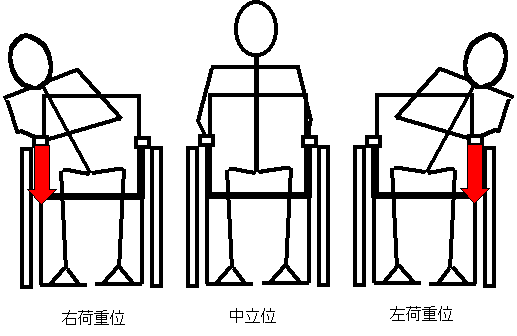
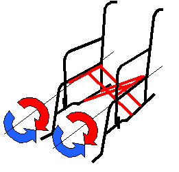
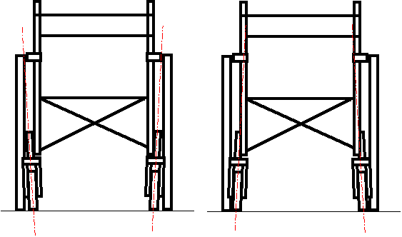
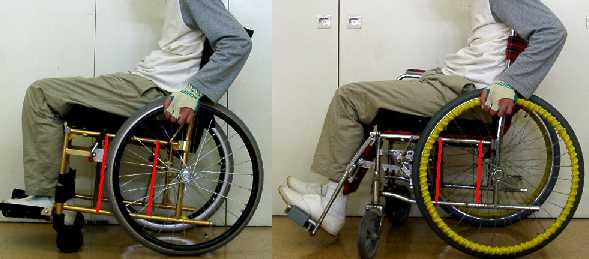

かならずお読みください→
車いすが曲がる
「この病院の車いすで，まっすぐ進むものは一台もありませんね」
車いすを何年か使っていると，右または左に自然に曲がるようになります．病院のように長い廊下では，特に気になるところです．また，
「片手片足でこいでいるのに，まっすぐ進む．こりゃ便利だ」
とのご意見もありますが，これは単なる偶然で，逆の場合はかなりお困りになると思います．また基本的には，車いすはまっすぐ進む方が便利な場合が多いようです．
ここで，車いすが曲がってしまう理由と，その直し方について考えてみます．
車いすがまっすぐ進まないという苦情は既に多くの方が指摘していることでしょう．それらの苦情は，当然に車いすを販売した人に集まり，直し方も知っておられるだろうと思いました．当院によく来られる業者さんに，修理を実演していただきました．

車いすの片方の前輪キャスタの下に，（上図では，右前輪に）数センチ厚の木片を敷き，他の前輪が地面から浮いた状態にします．その浮いた前輪を他の車輪と同時に地面につけるように，下方向に強く押しつけます．あとは，試乗し，曲がりの傾向が強まるようなら反対側の前輪キャスタで同様の作業をします．あとは試乗と作業を繰り返すそうです．
キーポイントは，前輪キャスタとフレームの歪みのようです．
キャスタ
車いすの前輪に一般的に使用されているキャスタは，図のような形状をしています．フレームパイプに取り付ける軸部分，軸まわりに回転するフォーク部分そして車輪部分から構成されています．

水平な路面に対して垂直にキャスタの軸が保たれていれば，各部分の弾性変形を無視すれば，これといって特殊な特性は持ちません．しかし路面が傾斜していたり，キャスタ軸が傾くと様々な特性を表します．路面の傾きはここでは省略します．水平面上において，キャスタ軸が前傾し，ここに垂直荷重がかかると，フォークには後方を向かせる力がかかります．ここで実際の車いすを観察すると，キャスタ軸が微妙に前傾していることがわかります．これは車いすに直進安定性を与えるための設計と思われます．実際に正確な計測はしておりませんが，このキャスタ軸の傾きは，車いすメーカによって微妙に異なるようです．
問題は，このような目視でようやくわかるような小さな角度で，車いすの走行特性が左右されるという点です．もしキャスタ軸の左右方向の傾きがほんの僅かでもあったら，人間が乗った時，車いすの前輪キャスタのフォークは，まっすぐ後方を向かなくなり，結果としてまっすぐ進まなくなるでしょう．
フレーム

一般的な車いすのフレームは，曲げたパイプを溶接して作られています．フレームは上図のような形状の部分から構成され，折りたたみ機能のための2組のＸ状のクロスバー（赤で表示）で左右のサイドフレーム部分（黒で表示）を連結する構造となっています．このクロスバー上部のキャンバス地の座席部分シートが，左右のサイドフレーム上部にキャンバス地の背もたれ部分シートが取り付けられています．サイドフレームには前後左右の車輪とフットレストが取り付けられています．
クロスバー部分とサイドフレーム部分の連結は，下がパイプのゆるみばめ，上はサイドフレームの凹にクロスバー上部の水平パイプ（ここに座面シートが付く）がはまりこみ，乗員の体重がかかることで一応の剛性を確保しています．
ここで気がつくことは，図のように捻り剛性が低くなっていることです．これは，後輪のタイヤ以外に緩衝機構（サスペンション）を持たない四輪車である車いすが，平坦でない路面を走行する際の車輪接地性を確保するために意図されたものと考えられます．
このように，車いすのフレームは各部分の微妙なバランスとフレーム（Frame 骨組み）と呼ぶにはかなり柔軟な設計で機能しています．決して「金属だから固くて強い」といったものではないことがわかります．サイドフレーム部分をさらに見てみます．サイドフレームはクロスバーで左右が連結されています．しかしクロスバーの位置は，乗員のお尻の下より後ろであることがわかります．これは足駆動するときなどに，足がクロスバーにあたらないようにするためです．つまりサイドフレームは，後ろ半分は比較的強固に左右が組み合っているが，前半分はこれに較べかなり弱い（剛性が低いといいます）のです．そしてその弱い部分に問題のキャスタと，バンパー役のフットレストがついているのです．

以上より，サイドフレームの微妙なねじれ変形を修正すれば，車いすがまっすぐ進むようにできると考えられます．初めに紹介した業者さんの修理方法もこれを目的にしていると考えられます．
修正方法
まず，車いすの点検を行います．片方の車輪がスムーズに回らないときや，タイヤの空気が均一でなかったりしても，車いすは左右に曲がります．またフレームに大きな変形や歪みがあるときも同様です．これらに当てはまるときは，それらの修理を先にしましょう．ここでやろうとしているのは，フレームの微妙な歪みの修正です．
次に試乗します．20mくらいの平坦な場所を準備します．当院では病院の廊下を使用しています．いくら平坦に見えても，施工によって微妙な凸凹や片流れがあることがあります．そのような場所では，どんな車いすもまっすぐ進みません．ほどほどましな場所を探しましょう．
試乗は，一般的な速度での慣性走行を下図の３つの姿勢で行います．中立位での車いす挙動（左または右に曲がる）が左荷重位と右荷重位でどのように現れるか観察します．
１．左荷重位で挙動が大きくなり，右荷重位では挙動が小さくなる
２．右荷重位で挙動が大きくなり，左荷重位では挙動が小さくなる
３．乗車姿勢であまり差はない．
４．その他１の場合：左サイドフレームの歪みが大きいです．
２の場合：右サイドフレームの歪みが大きいです．
３の場合：左右とも同じくらい歪んでいます．
４の場合：上のキャスタの項目をお読み下さい．左右別々の歪み方をしています．歪みが大きい方から修正します．修正の方向は，下図のように，左に曲がるのを修正するには，青い矢印方向に，右に曲がるのを修正するには，赤い矢印の方向です．

フレーム修正には，１〜1.5ｍの棒を使います．棒を写真の部分にかけ，足でサイドフレームの下横パイプに体重をかけます．ここでは，力を入れすぎないように注意してください．目で見てもほとんどわからないくらい少し変形させるのです．車いすのフレームは考えているほど強くはありません．特にアルミフレームの場合は，グニャっといきます．（変形の程度が小さければ直せます）力加減は文章では表現しにくいところですが，決して汗水流す力仕事ではありません．

修正と試乗を繰り返します．
フレーム修正での力加減を身につけるまでは，なかなか時間がかかるかも知れません．しかし２，３台練習すれば，１０分程度でできるようになります．また台数をこなすと，かなり微調整ができるようになります．当院ではこれまで，延べ６０台位この作業をしています．すべて直りました．
どうやら，キャスタやフレームに関する基本的な考え方は上の説明でおおよそ間違っていないようです．
応用
原理を理解した上で，まっすぐ進まない車いすを修正してまっすぐ進むようにできるということは，逆のこともできるということです． つまり
「片手片足でこいでいるのに，まっすぐ進む．こりゃ便利だ」
を偶然ではなく，ねらって実現できるはずです．
試してみたところ，できました．
また，上の図のように調整すると，体重移動で方向転換できる車いすもつくれるはずです．（左の図は体重移動の方向に曲がる．右は体重移動と反対方向に曲がる）
試してみたところ，できました．まるでスケートボードのようでした．とてもいいと思いましたが，そう思ったのは私だけでした．おもしろいと思うんだがなあ．
追加事項（０３／０１／３１）上記の方法がうまくいかない例を経験しました．その車いすは，ある患者さんの個人所有の車いすです．いくつか特注を加えていますので，普通の車いすとは若干異なる部分があります．製作後，この車いすが左へ曲がるので困るとの相談を受けました．試乗してみると確かにそのとおりです．そこで，上で説明した方法で修正を試みましたがなかなかまっすぐ進むようになりません．
仕方がなく，一番最初に業者さんから教えてもらった，前輪キャスタの下に木片を敷く方法を試してみたところ，修正できました．
上の写真の左は，製作した個人所有の車いす，右はそれまで使用していた病院所有の車いすです．２台の車いすの違いに注目すると，前方クロスバーの位置（写真の赤線）に気がつきます．個人所有の車いすでは，この患者さんに足こぎや起立動作の必要がないため，前方クロスバーがかなり前に付いています．これにより，この車いすでは，前述の『サイドフレーム部分をさらに見てみます．サイドフレームはクロスバーで左右が連結されています．しかしクロスバーの位置は，乗員のお尻の下より後ろであることがわかります．これは足駆動するときなどに，足がクロスバーにあたらないようにするためです．つまりサイドフレームは，後ろ半分は比較的強固に左右が組み合っているが，前半分はこれに較べかなり弱い（剛性が低いといいます）のです．』が当てはまらなかったと考えられます．そして，棒を使った方法では，修正できなかったのだと考えられます．
これに対して，キャスタ下に木片を敷く方法は，左右のサイドフレームと2組のクロスバーの全体をねじって変形させ，目的を達成することができたと考えられます．この車いすの場合，大人二人分の体重をかけました．この患者さんは，左上肢の力が少ないので，車いすが若干右に曲がる設定をご希望になりました．試みたところ，できました．
03/05/15 公開臨床リハ工学サービス科にもどる